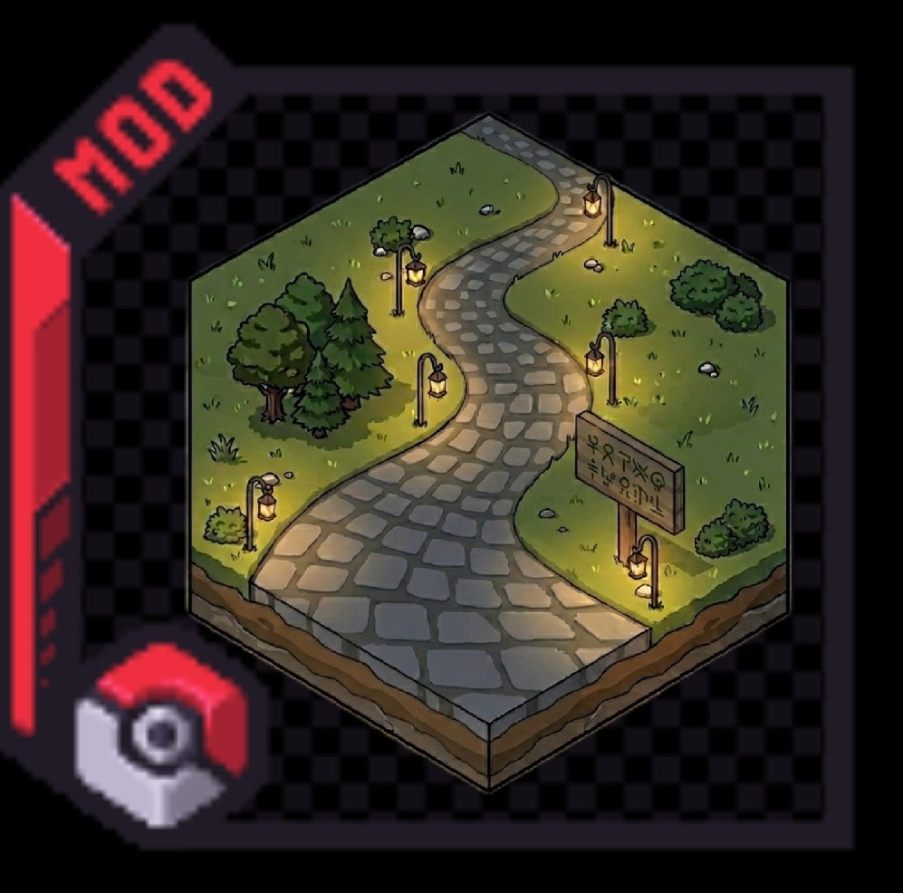
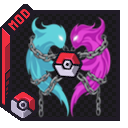
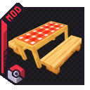
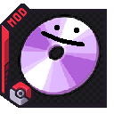
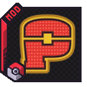
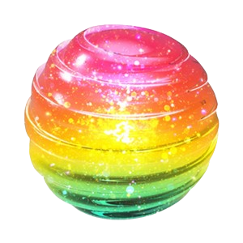
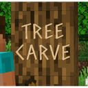
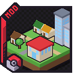
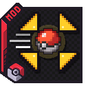

Cobblemon mods by shiero¶
Mods that turn a Cobblemon world into an adventure: roads and towns worth exploring, a Nuzlocke that enforces itself, every HM in your own hands, and more. The documentation for all of them lives here.
The mods¶

Routes Roads between your structures, named routes and map integration. No Cobblemon

Cobblemon Nuzlocke & Soul Link A Hardcore Nuzlocke the game enforces, plus co-op Soul Link. Cobblemon 1.7–1.8 Needs Routes

Cobblemon Picnic A picnic table that re-rolls the wild spawns around it. Cobblemon 1.8+

Cobblemon HMs Your Pokémon lend you their moves: HMs on your fist, auras on you. Cobblemon 1.8+

Cobblemon Raid Icons Every raid den on your minimap and world map. Client-only Needs Raid Dens

Cobblemon Champions Training Stat points instead of EVs, spent from the summary. Cobblemon 1.8

Cobblemon Mid-Battle EXP EXP at every knockout, used in the same battle. Cobblemon 1.7–1.8

Tree Carve Carve messages and symbols into logs with a sword. MC 1.21.1 · 26.1–26.3 No Cobblemon

Cobblemon PokeTowns Pokémon Centers, Marts and gyms in your villages. Not released yet Cobblemon 1.8+ Needs CobbleDollars + Waystones

Cobblemon Action Combat Cobblemon battles in real time: you drive your Pokémon. Not released yet Cobblemon 1.8+
Compatibility¶
Every mod runs on Minecraft 1.21.1, on Fabric and NeoForge; Tree Carve also has jars for 26.1 to 26.3. Both means the server and every player's game. Each mod's home page ends with the full list for your loader.
| Mod | Cobblemon | Side | Also needs |
|---|---|---|---|
| Routes 1.2.119 | — | Both | — |
| Nuzlocke & Soul Link 1.5.38 | 1.7–1.8 | Both | Routes |
| Picnic 4.0.0 | 1.8+ | Both | — |
| HMs 3.0.0 | 1.8+ | Both | — |
| Raid Icons 3.0.0 | via Raid Dens | Client | Raid Dens |
| Champions Training 1.0.14 | 1.8 | Both | — |
| Tree Carve 2.0.0 | — | Both | — |
| Mid-Battle EXP 2.0.0 | 1.7–1.8 | Both | — |
| PokeTowns 0.0.11 | 1.8+ | Both | CobbleDollars, Waystones |
| Action Combat 0.1.40 | 1.8+ | Both | — |
Start here¶
-
Installing¶
Every mod runs on Minecraft 1.21.1 on either Fabric or NeoForge. Drop the jar for your loader into
mods/— never both jars at once.Which Cobblemon each mod runs on, and what else it needs, is in the compatibility table above. Each mod's home page ends with the full list for your loader.
-
Configuring¶
Routes and Nuzlocke are set up on the world-creation screen and stored with that world. Picnic, Cobblemon HMs and Raid Icons use in-game config: a command, or a settings screen. Tree Carve is set by operators with
/treecarve config. Mid-Battle EXP has nothing to configure.See each mod's Configuration page.
-
Finding things¶
Every section follows the same order: Getting Started, the mod's own feature pages, Commands, Configuration, Troubleshooting, Community Credits.
The search box at the top covers every mod at once.
Found a bug, or have an idea?¶
Post in #mod-tickets on Discord and tag it — Bug, Crash, Idea or Feedback. A bot files it as an issue, replies in your thread with what it needs from you, and posts back there when it is closed. You do not need a GitHub account.
For a crash, attach crash-reports/crash-*.txt — the stack trace is what turns a hunt into a fix.
Something wrong on a page? Say so in the Discord — same place, same thread, and it gets fixed here.